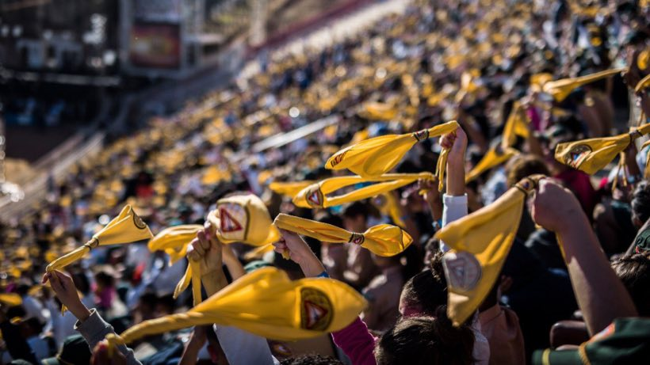
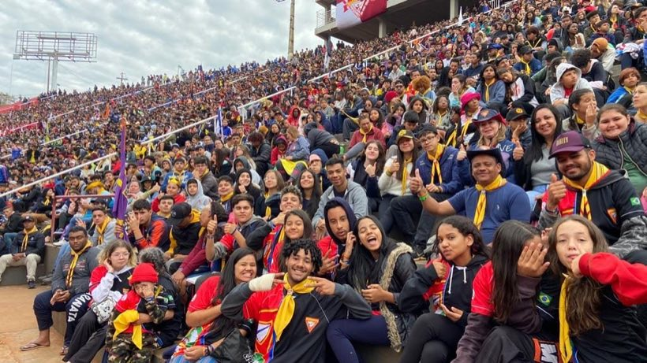
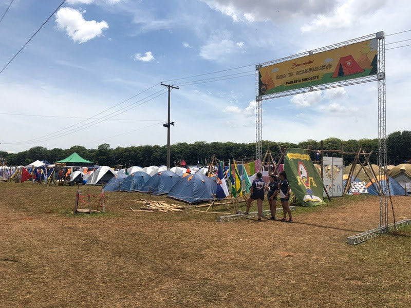

Eu gosto quando a gente ora junto no clube. Em Barretos vai ter um monte de desbravador orando na mesma hora, eu quero muito ver isso.
A jornada
Você não doa só dinheiro.
Você move o ônibus.
São aproximadamente 551 km de Paranavaí até Barretos. Ida e volta: 1.102 km. Dividimos a meta de transporte por essa estrada inteira — então cada R$ 14,07 equivale a 1 km da missão. O ônibus abaixo se move sozinho, conforme a campanha avança.
Posiçãokm
EtapaIda
Concluído%
Atualizando a posição do ônibus…
A ida ocupa a faixa de cima e a volta a faixa de baixo — o ônibus sempre viaja para frente. Distância rodoviária aproximada, usada como referência da campanha.
O destino
É isso que espera por eles.
Camporis de Desbravadores realizados no Parque do Peão, em Barretos: arena lotada, milhares de barracas e clubes de todo o continente reunidos.



O tamanho da aventura
Paranavaí dentro de um encontro sul-americano.
O VI Campori Sul-Americano de Desbravadores, com o tema “Sempre Desbravador”, será realizado no Parque do Peão, em Barretos (SP), em duas edições: Alpha, de 5 a 10 de janeiro de 2027, e Omega, de 12 a 17 de janeiro de 2027.
Participantes+120 milsomando as duas edições
Abrangência8 paísesda América do Sul
Edição6ªCampori Sul-Americano
Idades10–15anos, além da liderança
Dados divulgados pela organização oficial do evento. Conferir no site oficial do Campori ↗
Veja com seus olhos
Entenda a missão em poucos minutos.
O tamanho da experiência que espera nossos Desbravadores.
Uma segunda visão do Campori.
Na voz deles
Não é sobre pagar um ônibus.
É sobre o que eles vão viver lá. Quatro dos nossos Desbravadores, e o motivo de cada um querer estar em Barretos.
Meu pai fala que Deus cuida da gente na viagem. Eu quero ir pra Barretos e voltar contando que deu tudo certo.
No Campori a gente estuda a Bíblia junto com gente de tudo quanto é lugar. Acho que isso faz a minha fé ficar maior.
Quero ir pra Barretos pra ficar mais perto de Deus e do meu clube ao mesmo tempo. Acho que é isso que faz o Campori ser diferente.
Cada quilômetro que você leva é um pedaço dessa viagem na vida deles.
Identidade
Paranavaí estará em Barretos.
Um clube de Paranavaí vai atravessar 551 km para se juntar a Desbravadores de oito países. Nossos jovens vão levar o nome da nossa cidade — e voltar com histórias que ficam para a vida inteira.
Adote seus quilômetros
Coloque seus quilômetros na estrada.
Escolha os km, copie o Pix com o valor já preenchido e mande o comprovante. O valor aparece na hora, sem letras miúdas.
Passo 1
Quantos km você quer levar?
km
Seu impacto
10 km
Você leva o Vale do Ivaí 10 km mais perto de Barretos.
R$ 140,65
Quero escolher um trecho específico da estrada
De onde até onde você quer levar o ônibus. As cidades são as do trajeto real Paranavaí → Barretos.
Paranavaí · km 0Barretos · km 551
A equivalência em quilômetros é apenas uma forma transparente de visualizar a meta. Todo valor recebido é destinado ao transporte do clube para o Campori.
Como contribuir
Pix em cinco passos
1
Escolha seus quilômetros.
2
Copie o Pix com o valor já preenchido.
3
Cole no aplicativo do seu banco, em Pix Copia e Cola.
4
Envie o comprovante pelo WhatsApp — o código da sua doação já vai junto.
5
Após a confirmação no extrato, o ônibus avança.
Pix Copia e Cola · valor já preenchido
Código desta doação—
✓ Pix copiado. Agora abra seu banco e escolha Pix Copia e Cola. Depois, envie o comprovante aqui embaixo.
Cole no app do banco em Pix › Pix Copia e Cola. O valor já vai junto, não precisa digitar nada.
O código acima identifica a sua doação e já vai junto na mensagem do WhatsApp quando você enviar o comprovante. É por ele que conseguimos achar a sua contribuição no extrato e prestar contas certinho.
Doação transparente
Pix institucional · Igreja Adventista do Sétimo Dia / União Sul Brasileira
- Nenhum valor passa por conta pessoal
- Cada doação recebe um código individual
- Contribuições são conferidas no extrato
- Prestação de contas pública
⚠️ Chave PIX ainda não configurada.
Preencha
Preencha
pix.chave e pix.recebedor em dados.json.
O WhatsApp abre com a mensagem já escrita. Por segurança do próprio aplicativo, o anexo do comprovante é feito por você na conversa.
Marcos da estrada
Cada trecho vira uma conquista.
🏁
275 km
Primeiro quarto da missão.
A desbloquear🏕️
551 km
Chegada simbólica a Barretos.
A desbloquear🔥
826 km
Três quartos da jornada.
A desbloquear🎉
1.102 km
Ida e volta garantidas.
A desbloquearTransparência
Meta clara. Progresso visível.
Quem contribui merece saber exatamente onde a campanha está.
Meta de transporteR$ 15.500
Total recebidoR$
Falta arrecadarR$
Estrada financiadakm
Contribuições—
Última atualização—
Prestação de contas
Para onde o dinheiro foi
Cada saída do caixa da campanha aparece aqui, com data e valor.
Doação transparente
Pix institucional · Igreja Adventista do Sétimo Dia / União Sul Brasileira
- Nenhum valor passa por conta pessoal
- Cada doação recebe um código individual
- Contribuições são conferidas no extrato
- Prestação de contas pública
Prestação de contas
Para onde vai o dinheiro
As contribuições vão para a conta oficial da Igreja Adventista do Sétimo Dia — União Sul Brasileira. Nenhum valor passa por conta pessoal. O nome do recebedor aparece no seu app na hora de confirmar o Pix.
Por ser uma conta institucional, que também recebe outros valores da igreja,
cada doação da campanha recebe um código próprio (começando com
VALE). É esse código que identifica a entrada e permite prestar
contas só do que é do Campori.
O que será publicado aqui
- Orçamento e contrato do transporte
- Atualização periódica do total arrecadado
- Comprovantes das despesas da viagem
- Contato de um responsável pelo clube
- Prestação de contas final após o Campori
Sem publicar dados pessoais, documentos com CPF ou informações bancárias sensíveis.
Quem está por trás
A diretoria do clube.
São eles que organizam a viagem e respondem pela campanha. Qualquer dúvida, é só chamar.
Diretor
Eder Dias
Falar no WhatsApp ↗
Diretor associado
André Lima
Capelão
Guilherme Mestriner
Falar no WhatsApp ↗
É para este número que vão os comprovantes.
Tesoureira
Camila Nogueira
Secretária
Isabelly Lima
Mural
Quem está colocando o ônibus na estrada.
Quem contribui escolhe aparecer aqui ou permanecer anônimo.
Depois de ajudar
Leve sua parte da estrada com você.
Gere uma arte para compartilhar no WhatsApp ou nos Stories. O valor doado não aparece — só os quilômetros.
No celular abre o menu de compartilhamento. No computador, a imagem é baixada.
Eu ajudei essa missão
SEU NOME
levou o Clube Vale do Ivaí
10 KM
mais perto do Campori 2027
Paranavaí → Barretos
#EuLeveiOVale
Efeito corrente
Uma pessoa leva 1 km. Outra leva 50.
A estrada vai ficando menor.
Se você não puder contribuir agora, compartilhar já ajuda a mover o ônibus.